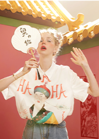

邓紫棋(G.E.M.) ，1991年8月16日生于中国上海，4岁移居香港，中国香港创作型女歌手。 2009年1月， 夺得叱咤乐坛流行榜“叱咤乐坛生力军女歌手金奖”，是该奖的首位未成年获得者。 2011年, 邓紫棋在香港红馆举行5场个人演唱会。2014年，参加《我是歌手第二季》，夺得总决赛亚军。2017年1月6日，作为邓紫棋 大银幕处女作的青春励志电影《一路逆风》全国上映。2018年10月26日, 发行
| 时间 | 曲目 | 演唱者 | 专辑 | 参与环节 |
| 多远的距离 | 邓紫棋 | 《新的心跳》 | 独自作词，独自作曲 | |
| 再见 | 邓紫棋 | 《新的心跳》 | 独自作词，独自作曲 | |
| 新的心跳 | 邓紫棋 | 《新的心跳》 | 独自作词，独自作曲 | |
| 2015 | 单行的轨道 | 邓紫棋 | 《新的心跳》 | 独自作词，独自作曲 |
| 一路顺风 | 邓紫棋 | 《新的心跳》 | 独自作词，独自作曲 | |
| 于是 | 邓紫棋 | 《新的心跳》 | 独自作词，独自作曲 | |
| 给你的歌 | 邓紫棋 | Single | 独自作词，独自作曲 | |
| 2016 | 画 | 邓紫棋 | Single | 独自作词，独自作曲 |
| 红蔷薇白玫瑰 | 邓紫棋 | Single | 独自作词，独自作曲 | |
| 光年之外 | 邓紫棋 | Single | 独自作词，独自作曲 | |
| 2017 | 穿越火线 | 邓紫棋 | Single | 独自作词，独自作曲 |
| 2018 | 倒数 | 邓紫棋 | 《另一个童话》 | 独自作词，独自作曲 |